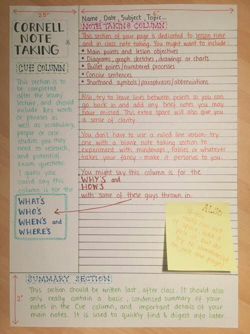
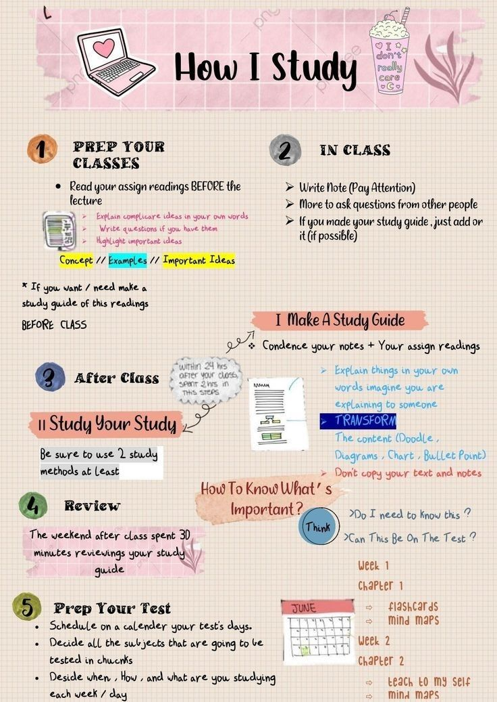
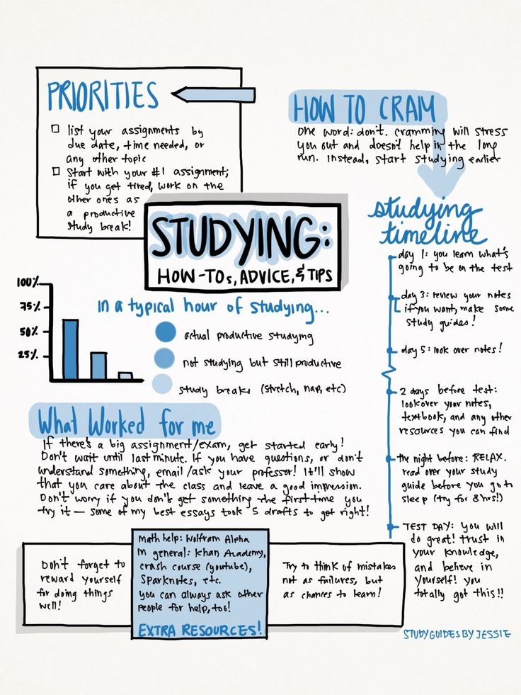

Introduce Yourself
This is a message board where you can put your nickname or name, residential college, major, what you’re working on, how you’re feeling, or anything else you want to share about you, such as inspiring quotes, thoughts on chemistry, etc. (Don't worry, the only person who can view your messages is anyone on your device).
Pinterest Study Inspo
Here’s some things that students do to help them with their studying. Of course everyone learns differently and what works for one person might not work for anyone else. I hope something from here helps you or is just nice to see. Best of luck :)
Study Tip #2:
Do as many past exams papers as possible to nail the exam technique. Practice makes PERFECT!
Do as many past exams papers as possible to nail the exam technique. Practice makes PERFECT!

Tips For Doing Well on Exams.
- Don't cram, especially the night before the exam.
- Manage your time wisely.
- Proceed from Easy to Hard.
- Annotate/Revise/Make-Your-Own Study Guide.
- Use practice exams.
- Rewrite your notes.
- Do your homework.
- Don't Stress.

Study Tip #8
Don't study without breaks. Make sure to relax your mind - it can be every 25 minutes or every 3 hours!
Don't study without breaks. Make sure to relax your mind - it can be every 25 minutes or every 3 hours!
When you need a push: Seriously, just do your homework the day you receive it, write revision notes, do your readings, write on those readings, make flash cards, knock out assignments as soon as you know they actually exist, read every wider reading novel (analyse these novels), read your required readings (analyse these too), go over flash cards every morning/afternoon, make use of spare time in class, buy coffee/hot chocolate in the mornings and put in a thermos, keep a necessities pouch in your bag, use a planner, wash your hair, go to commitments, attend school events, attend events you are invited too, watch movies, be kind to yourself, listen to music, SLEEP, get that 9, and most importantly be proud of yourself.

Live. Love & Learn Study Tips.
- Schedule Study Time: Stick to the schedule! If something urgent comes up, reschedule your study time.
- Use Subject Blocking: Instead of studying one subject for 3 hours straight, do 3 different subjects for 1 hour each.
- Switch It Up: Use different studying techniques to keep yourself interested.
- Get Enough Sleep
- Silence Distractions: Put your phone on Airplane or Focus mode. Turn on non-distracting instrumental music if you need background noise.

Be positive!
Think positive and encourage yourself. Your mindset is more important than you think, so keep motivating yourself and telling yoursefl that you are going to ace your exams.
Think positive and encourage yourself. Your mindset is more important than you think, so keep motivating yourself and telling yoursefl that you are going to ace your exams.